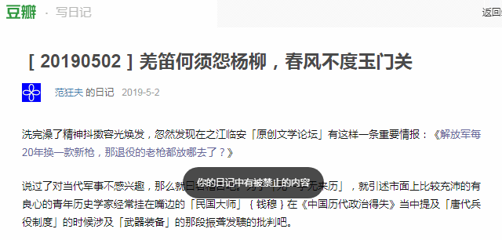

洗完澡了精神抖擞容光焕发，忽然发现在之江临安 「原创文学论坛」有这样一条重要情报：《解放军每20年换一款新枪，那退役的老枪都放哪去了？ 》
说过了对当代军事不感兴趣，那么就曰若稽古吧。为了「无一字无来历」，就引述市面上比较充沛的有良心的青年历史学家经常挂在嘴边的「民国大师」钱穆 在《中国历代政治得失》当中提及「唐代兵役制度」的时候涉及「武器装备」的那段振聋发聩的批判吧。
长话短说，叫嚣着不远万里「西天取经」从三洲通衢进口弥赛亚 的那拨色目文艺爱好者所吹捧的「我东突大唐」之兵役制度，也就是「中学历史课本」上面就作为考试重点的「府兵制」，也是萧规曹随继承了关陇集团「柱国」系统。对于另外一拨叫嚣着「紫气东来」并拼命推销辫子戏的的色目文艺爱好者来说，可以当作「汉八旗」那样简单的理解。
也就是说，在制度建立之初，内亚外宾领导的西北汉族当中没有「好铁不打钉，好男不当兵」这种民谣。除了鸡巴尊贵的少数民族主子之外，汉族贱种屁民也按照经济状况划分为三六九等。其中下三等民户「泥腿子穷棒子」是没有资格当兵的，一小撮杂胡野种牛鬼蛇神「领导」绝对不会让狼牙棒或枪杆子被这帮仇恨民族压迫和阶级压迫的双重压迫的种姓制度惦记着革命无罪造反有理的「不代表先进生产力的反鞑贱种」所把持。
只有上等中等人家，通常也是人缘好情商高与少数民族「领导」关系比较密切的那些，私有财产承担得起「自带干粮」撸起袖子加油干为虎作伥助纣为虐的「代价」，并且识大体顾大局懂政治讲规矩守纪律，也有「膝盖生根头顶绿得发黑贱到骨子里去了」的觉悟，通过了政治审查之后，就会加入「鞑卫队」。家庭获得免税待遇，但是没有军饷也不发军械，一切都由「志愿兵」自备。
这些被虚无缥缈的名词所煽动得热血上头的傻哔炮灰，带着趁手合意的衣甲、兵器、马匹，以及一些有备无患「为了大炼钢铁砸自家锅」而特意准备的零用钱，斗志昂扬的「响应兲可汗号召到内亚外宾最需要的地方去」，结果发现当地少数民族干部叫嚣着「党要管党从严治党」将一切私人物品上缴「公司」库房登记造册「按需分配」，然后就被勒令去从事各种「贱业」，还得是「996 」工作制，累死了就算「福报」，遗产都交党费，骨灰盒上盖一块画着镰刀榔头的抹布就被打发。
当时钱穆 就念了一首诗：「一从十五北防河，便至四十西营田，去时里正与裹头，归来头白还戍边 」。其它批判不再引述，各位读者若有兴趣可以寻找这本在前朝与本朝都是合法出版物的「党性坚定的老审查员」也无可奈何的划时代史学大作相关章节自行阅读。
再举个色目军事爱好者经常挂在嘴边的前朝轶事「装哔打脸」俗套桥段，说疑似戴季陶 亲生的而由常凯申 收养的龙裔蒋纬国 ，曾经是低调做人高调做事的模范大头兵，言行举止吃喝拉撒睡都符合「军政」要义，按照组织安排是向「训政」阶段过渡的重要人物。
说有一次蒋纬国 坐火车，与一位挺胸腆肚的将星闪耀的党国栋梁中年才俊是上下铺。那位名将の花看蒋纬国 肩膀军衔低，勒令其将下铺让出。这蒋纬国 果然识大体顾大局懂政治讲规矩守纪律，敬了个标准军礼声音洪亮回答「Yes, General 」就把铺盖卷扔到上铺。然后名将の花看蒋纬国 配枪精致，出言索要。这蒋纬国 敬了个标准军礼声音洪亮回答「No, General 」解释「乃家父所赐不敢赠出」。于是名将の花询问家谱，蒋纬国 敬了个标准军礼声音洪亮回答「家父乃蒋委员长」……名将の花扭头推门就走。
这就是当年刮民党遭殃军的日常，那「民国大师」钱穆 以曰若稽古方式进行振聋发聩的批判，就是古为今用「太阳底下没有新鲜事」「一切历史都是当代史」嘛。
当然喽，如今圣兲可汗在位，我中华兲朝上国河清海晏歌舞升平真乃盛世景象，不用扯那些喊打喊杀的不和谐的内容，只看灯红酒绿之中一票气吞寰宇的兲朝特色大手会社当中的「办公室政治」吧。
很多人都指出大手会社体制森严，对「私人物品」管理严格，除了内部「反间谍机构」对特务卧底严防死守之外，领导还在日理万机之余抽出宝贵的时间关心员工言行举止吃喝拉撒睡尤其是随身自备的「衣甲、兵器、马匹」和「零用钱」。
哪怕在钢笔论坛之上，都看见有人民群众抱怨：买了个「Parker 51 」带到公司自用，有次开会被办公室小头目借走，然后没还回来，问起来就说「丢了，不就是一根笔么，中午楼下买根英雄 赔给你」。
而我自己的亲身经历，在《煎蛋段子区评论〔№4167498〕新时代兲朝特色奴隶制度 》的『补充（续）』一节当中已经提到，这里不再重复。顺便，一个多礼拜之前最后手续已经完成，如今与「原公司」再没有任何政治经济军事法律上的联系。
所以，稍微正规一点的企事业单位，都会统一提供「办公用品」而不是勒令员工「自备」再按照以普六茹プロル 大野おおの
哪怕就看充沛的「有良心的青年历史学家兼码字巨侠」的网络文学，人民群众也知道大萌朝「军工行业」提供的制式装备臭不可闻，多次在征讨「建奴」过程中炮制「滑坡悖论」素材。莫谈国事只谈风月，就说那南不列颠及北爱尔兰联合王国理查三世 在1485 年博斯沃思战役当中的表现吧：
失了一颗马蹄钉，丢了一个马蹄铁；
For want of a nail the shoe was lost.
据称南不列颠及北爱尔兰联合王国钦定文豪莎士比亚 当时就念了一句诗：「马！马！一马失社稷！ 」（A horse! a horse! my kingdom for a horse! ）——《理查三世》第五幕第四场

Wort Verboten !